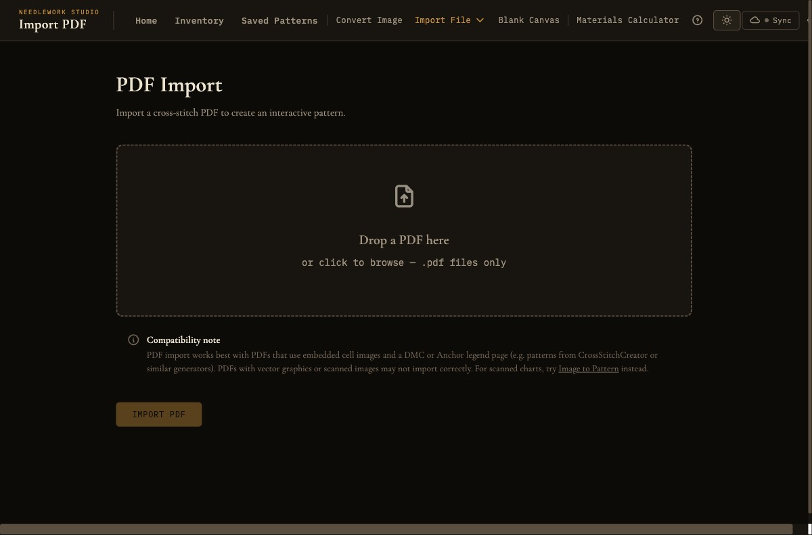

Import & Export
Bring patterns into Needlework Studio from multiple file formats and export them for printing, sharing, or use in other software.

The PDF import interface for uploading cross-stitch pattern charts
Import Formats
Needlework Studio can import cross-stitch patterns from three file formats. All import options are available from the Create menu in the navigation bar.
PDF Import
The PDF importer is designed to handle cross-stitch chart PDFs - the type of multi-page document you might purchase from a pattern designer or download from an online marketplace. Needlework Studio automatically parses the chart pages to extract the pattern grid, color legend, and stitch data. Both DMC and Anchor thread legends are recognized.
Three chart types are supported:
- Image-based charts - Each grid cell is a small embedded image. This is the format most third-party pattern designers use.
- Text-based charts - Grid cells use text symbols (letters, numbers, special characters) with a symbol-to-color legend. This includes PDFs exported by Needlework Studio itself, which produce a perfect round-trip with 100% cell accuracy.
- Colored rectangle charts - Grid cells are vector-drawn colored rectangles, matched to the legend by fill color.
How it works:
- Upload - Select a PDF file from your computer using the file picker. The PDF should contain cross-stitch chart pages with a grid of symbols or colors.
- Preview - After upload, Needlework Studio displays a preview of the parsed pattern along with the extracted thread legend. Review the preview to verify that the chart was parsed correctly. The preview shows the full grid with colors and symbols as they were interpreted from the PDF. Each legend entry includes a status dot indicating whether you own, need, or don't own the thread, cross-referenced with your Thread Inventory.
- Name and save - Enter a name for the pattern and click save to add it to your library.
The PDF parser works best with digitally-generated chart PDFs. Scanned or photographed charts are not supported — try Image to Pattern instead. If a PDF contains multiple chart pages, Needlework Studio will stitch them together into a single continuous pattern. If the import fails, you will see a specific error message explaining what went wrong (for example, "could not find a thread legend" or "no chart pages found").
JSON Import
JSON is Needlework Studio's native pattern format. JSON files contain the complete pattern data structure including the stitch grid, thread legend, part stitches (half, quarter, three-quarter), backstitches, French knots, beads, and all metadata. This format preserves every detail of the pattern with perfect fidelity.
Common uses for JSON import:
- Transferring patterns between Needlework Studio instances (for example, from one server to another).
- Restoring a pattern from a backup.
- Sharing patterns with other Needlework Studio users who do not have access to your server.
To import a JSON file, select JSON Import from the Create menu, choose the file, review the preview, enter a name, and save.
OXS Import
OXS (Open Cross Stitch) is an XML-based standard format designed for interoperability between different cross-stitch software applications. Importing an OXS file allows you to bring patterns from other cross-stitch programs into Needlework Studio.
The OXS format supports full stitches, part stitches, backstitches, French knots, beads, and thread color definitions. Needlework Studio maps the thread colors in the OXS file to the closest matching DMC or Anchor threads in its database, using perceptual color matching when an exact match is not available.
OXS import enforces a maximum of 70 colors and a maximum grid size of 500 × 500 stitches. Files that exceed either limit will be rejected with an error message during the upload step.
To import an OXS file, select OXS Import from the Create menu, choose the .oxs file, review the imported pattern, name it, and save.
Import Workflow
Regardless of the file format, the import workflow follows a consistent sequence:
- Upload file - Select the file from your computer using the file picker dialog. The file is uploaded and processed on the server.
- Preview with legend - The imported pattern is displayed as a preview alongside its thread legend. Review the preview carefully to confirm that the pattern was parsed correctly. Check that the colors look right, the dimensions match what you expect, and the stitch types are properly represented.
- Name pattern - Enter a descriptive name for the pattern. This name will appear in your pattern library and can be changed later.
- Save - Click the save button to add the pattern to your library. The pattern is now available in the Saved Patterns gallery, where you can open it in the Pattern Viewer or the Pattern Design editor.
Export Formats
Needlework Studio can export saved patterns in four formats. Export options are available from each pattern card's dropdown menu in the Saved Patterns gallery.
PDF Export
The PDF exporter generates a multi-page vector document optimized for printing, offline use, and compatibility with Pattern Keeper (the popular Android/iOS stitching companion app). The exported PDF includes:
- Cover page - A title page showing the pattern name, a thumbnail preview of the design, overall dimensions in stitches, thread count, and other summary information.
- Tiled grid pages - The full pattern chart is split across multiple pages in a tiled layout. Symbols are rendered as selectable vector text using an embedded TrueType font (DejaVu Sans), and grid lines are drawn as vector paths, so the chart stays crisp at any zoom level. Adjacent tiles include a 1-row and 1-column overlap to make it easy to follow the chart across page boundaries. Bold grid lines mark every 10th row and column, with numeric labels for quick orientation.
- Legend page - A complete thread legend listing every color used in the pattern with its symbol, DMC or Anchor thread number, color name, strand count, stitch count, and a color swatch. This serves as your shopping list and reference while stitching. The legend format is compatible with Pattern Keeper's automatic legend detection.
The PDF output is designed for standard letter or A4 paper sizes and uses high-contrast colors and symbols that remain legible when printed in black and white. Because the output is fully vector-based, exported PDFs can also be re-imported into Needlework Studio with perfect round-trip accuracy.
SVG Export
The SVG exporter produces a vector graphics file of the pattern chart. Because SVG is a vector format, the output can be scaled to any size without loss of quality. This makes it ideal for:
- High-quality printing - Print the chart at any size, from a small reference card to a large poster.
- Editing in vector software - Open the SVG in applications like Inkscape, Adobe Illustrator, or Figma to add custom annotations, borders, or labels.
- Web publishing - Embed the chart on a website or blog post as a scalable image.
The exported SVG includes the full grid with color fills and symbol overlays, matching the appearance of chart mode in the Pattern Viewer.
OXS Export
Export your pattern in the Open Cross Stitch XML format for compatibility with other cross-stitch software. The OXS file includes full stitches, part stitches, backstitches, French knots, beads, and thread color definitions. This is the best format to use when you need to share a pattern with someone who uses a different cross-stitch application.
JSON Export
Export the pattern in Needlework Studio's native JSON format. The JSON file contains the complete pattern data with full fidelity, including:
- The stitch grid with all full stitch data
- Part stitches (half, quarter, three-quarter) with position and orientation
- Backstitches with start and end coordinates
- French knots with positions
- Beads with positions
- The complete thread legend with DMC/Anchor thread references
- Fabric color
- Pattern metadata (name, dimensions, creation date)
- Progress tracking data
JSON export is the recommended format for backups, archiving, and transferring patterns between Needlework Studio instances. It is the only format that guarantees no data loss during export and re-import.
Backup All
The Backup All button in the Saved Patterns gallery exports your entire pattern library as a single ZIP file. Each pattern is saved as an individual JSON file inside the archive, so you can restore any or all of them later with the JSON import.
The downloaded file is named needlework-studio-backup-YYYY-MM-DD.zip with the current date. This is the fastest way to create a full offline backup of your work, and it pairs well with the JSON import if you ever need to move to a new server or recover from data loss.